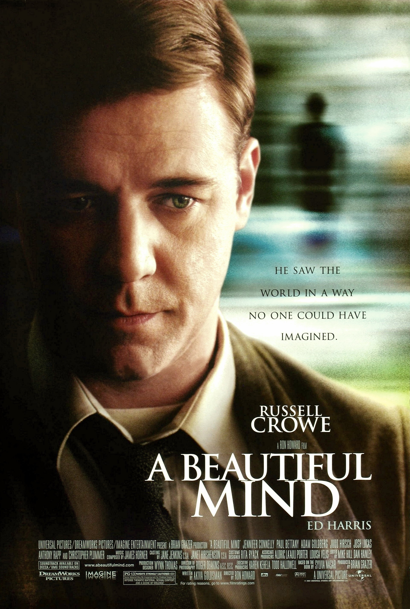

美丽心灵（A Beautiful Mind，2001）
一句话短评：
内容简介：
- 本片是关于20世纪伟大数学家小约翰•福布斯-纳什的人物传记片。
- 小约翰•福布斯-纳什（拉塞尔•克劳）在念研究生时，便发表了著名的博弈理论，该理论虽只有短短26页，却在经济、军事等领域产生了深远的影响。但就在小约翰•福布斯-纳什蜚声国际时，他的出众直觉因为精神分裂症受到困扰，然而这并没阻止他向学术上的最高层进军的步伐，在深爱他的妻子艾丽西亚（珍妮弗•康纳利）的鼓励和帮助下，他走得虽然艰缓，却始终没有停步，而最终，凭借十几年的不懈努力和顽强意志，他如愿以偿。
短评：
- 是的，你必须学会分清哪些是幻觉，哪些是梦，哪些是真实的人生，才可以活下去。 ——时以星
可播放资源：
- 哔哩哔哩 VIP免费观看
- https://www.bilibili.com/bangumi/play/ss26175?bsource=douban